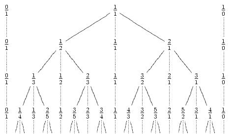

Time Limit: 1 sec
Memory Limit: 16MB
In number theory, the Stern-Brocot tree is a method of listing all non-negative rational numbers as well as a point representing infinity (here represented formally as 1/0).
The tree may be created by an iterative process. It is easiest to describe as a
list. Beginning with the list {0/1, 1/0} representing 0 and infinity respectively,
one places between any two fractions the mediant of the fractions (the mediant of
a/c and b/d is (a + b)/(c + d)). The first few steps of this process yield:
{0/1, 1/0}
{0/1, 1/1, 1/0}
{0/1, 1/2, 1/1, 2/1, 1/0}
{0/1, 1/3, 1/2, 2/3, 1/1, 3/2, 2/1, 3/1, 1/0}
This process can be represented as a tree where each row corresponds to the new numbers added at each step.
From Wikipedia
The position of a fraction in the tree can be specified as a path consisting of L(left) an R(right) moves along the tree starting from the top (fraction 1/1). Your have to find a fraction by a given path.
a/b". Where "a" is
numerator and "b" is denominator of the fraction.
3
RL
RLR
RRL
3/2
5/3
5/2
Problem setters: Aleksej Viktorchik, Leonid Shishlo.
Huge Easy Contest #1